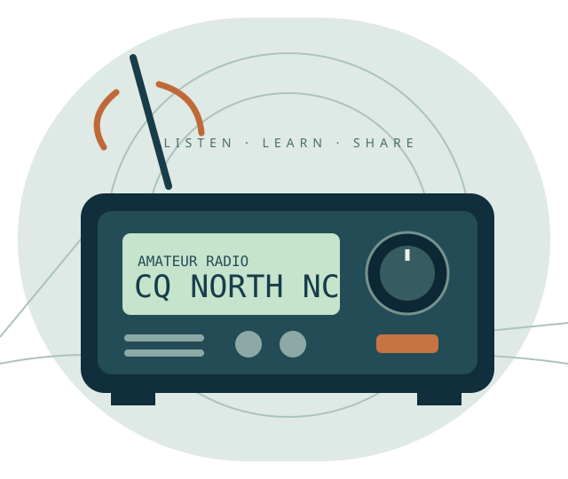

Ask an Elmer
Licensing, equipment, antennas, digital modes or a station that just won’t cooperate. Start with your topic and general area.
Prepare a requestIn development · Seeking founding volunteers
From your first call sign to your next antenna, a little guidance goes a long way. We’re building a statewide resource to help clubs share knowledge and connect learners with volunteer Elmers.
An Elmer is an amateur radio mentor. Everyone starts somewhere.

From the mountains to the coastLocal clubs lead their own activities. The society’s role is to make useful information easier to find and assistance easier to share.
Read our purposeLicensing, equipment, antennas, digital modes or a station that just won’t cooperate. Start with your topic and general area.
Prepare a requestExplore researched club listings across North Carolina. Use the source listing to confirm current meetings and contacts.
Browse the directoryHelp shape the society, volunteer your experience, or become a point of contact for your club.
Express your interestOur initial research includes 140 club entries, drawn from amateur radio directories and the North Carolina nonprofit report.
This is a starting point for confirmation, not a roster of participating clubs. Some listings may be historical. State records alone do not establish current activity or corporate standing.
Search the research directory